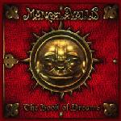

| Artist: | Mangala Vallis |
| Title: | The Book Of Dreams |
| Label: | Tamburo Avapore TAVR 012001 |
| Length(s): | 62 minutes |
| Year(s) of release: | 2001 |
| Month of review: | [07/2002] |
| 1) | Ouverture | 1.47 |
| 2) | Is The End The Beginning? | 9.28 |
| 3) | The Book Of Dreams | 7.05 |
| 4) | The Journey | 12.13 |
| 5) | Days Of Light | 9.05 |
| 6) | Under The Sea | 3.34 |
| 7) | Asha (coming Back Home) | 8.20 |
| 8) | A New Century | 10.22 |
The Book Of Dreams is quite different. Here the mellotrons and the pounding drums (which in my opinion could have pounded just a tad harder), and Mark Kelly inspired keyboard runs, while the vocal part has strong similarities to some of the vocal lines in I Know What I Like (and it has that plodding feel as well at times) and the And Then There Were Three period. To be sure, I like this more than I do I Know What I Like. The voice still sounds a bit like Neal Morse, but less than on the previous track, and the style of the band is now more overtly Genesis inspired. Note the Gentle Giant style vocal hamornies halfway.
The Journey combines a strong organ sound with rather plaintive vocals in the emotional more down to earth style of And Then There Were Three-era Genesis and it works well, supported by high pitched guitar lines. The music winds down a bit then, to be put back on the rails again and turning into a rather active optimistic sounding track. Again, I hear some echoes of Spock's Beard in some of the turns and phrases, no literal citations mind you, but just a feeling I get. For the rest, this is straightforward soloing on the part of the keyboardist and guitarist in a recognizable symphonic rock vein. At eight minutes the slowly evolving, one might say Floydian,
On Days Of Light the band reaches a new highlight. This song has vocals and mellotron in the style of early day Genesis, but the vocal melody is more Collins like (but still safely in the progressive days of Genesis, do not worry). The bass lines is quite prominent, the drums only yielding accents for the music. On the whole again a rather plaintive, melancholic track.
With Under The Sea the bass takes the fore again with some very strong, low playing. Then the melodies take the fore again, with some ardent symphonic rocking: a soloing guitar, plenty of organ and eighties inspired keyboards. After this shortish instrumental the band returns with Asha (Coming Back Home) which has often a moody jazzy feel.
A New Century is the closer of the album with Bernardo Lanzetti on vocals. In it we find many of well-known elements of the band, the kind of closer one might expect: quite a bit of bombasm and climatic, but also featuring some harpsichord and the Genesis as strong as ever, quite potent. A small afterbirth is present in the form of some sampled voices.